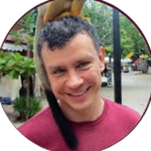

The whole flow
RTL to signoff, hands-on, nothing skipped.
ForwardEdge ASIC is sponsoring SASi, and we're hosting SCALE MN industry meetings this fall. Read the update
SASi · College of Science & Engineering · UMN
Stone Arch Silicon (SASi), the ASIC and chip design club at the University of Minnesota. Students building skills in RTL, verification, analog design, and physical design—from first circuits to fabrication-ready layouts.
About
Almost nobody gets to design a chip as an undergrad. Stone Arch Silicon exists so you can
RTL to signoff, hands-on, nothing skipped.
Cadence, Synopsys, and Siemens on our own 20-node cluster.
Open PDKs and shuttle programs, so clean designs can actually ship.
Teammates who will tell you your timing doesn't close.
Our team
Undergraduate officers, subteam leads, and the faculty who advise them.

President / PD lead
View profileVP / RTL / Outreach
View profileVerification lead
View profileAnalog lead
View profileDocumentation lead
View profileTimeline / Funding
View profileEvents / Spaces
View profilePromotion
View profileFaculty advisor

Synthesis / Verification advisor
Explore
Everything SASi does, one page each.
Our four subteams, the people who run the club, and the ASIC Network.
About SASi → Page/03Thursday meetings in Keller Hall 3-111, and everything else on one calendar.
See the calendar → Page/04SCALE MN industry meetings, our sponsor, and the ASIC 101 curriculum.
Read the updates → Page/05Fund hackathons, conferences, tapeouts, and the ASIC Network.
How sponsoring works →